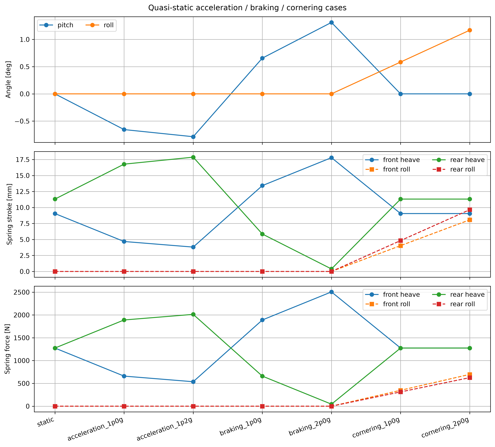
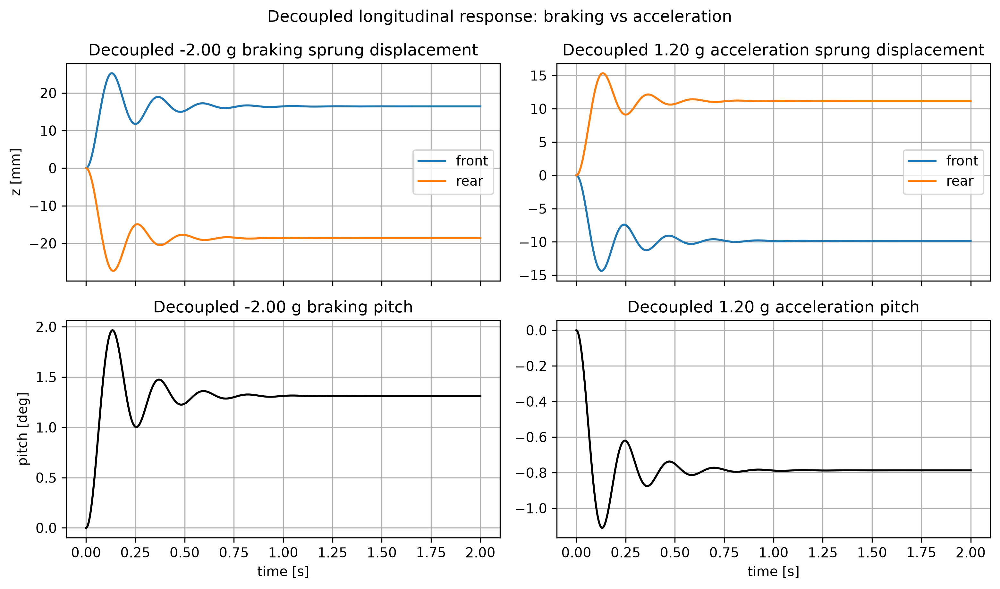
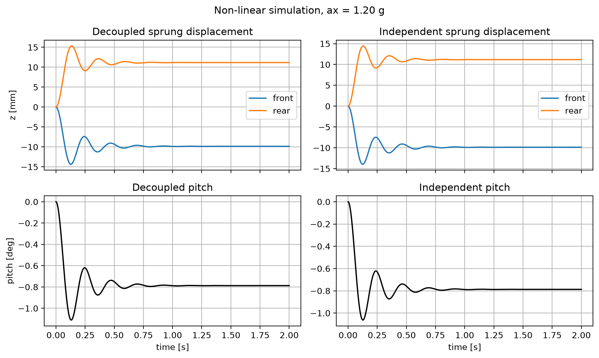
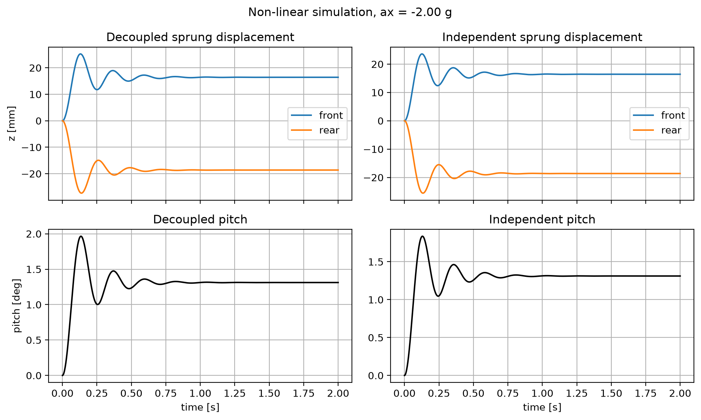
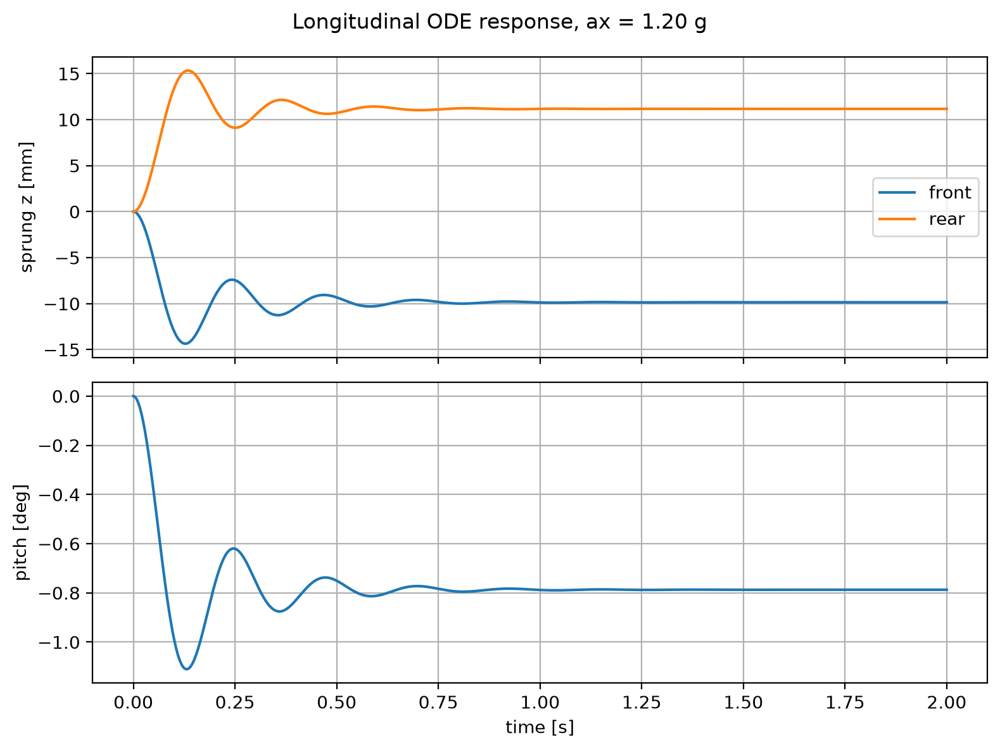
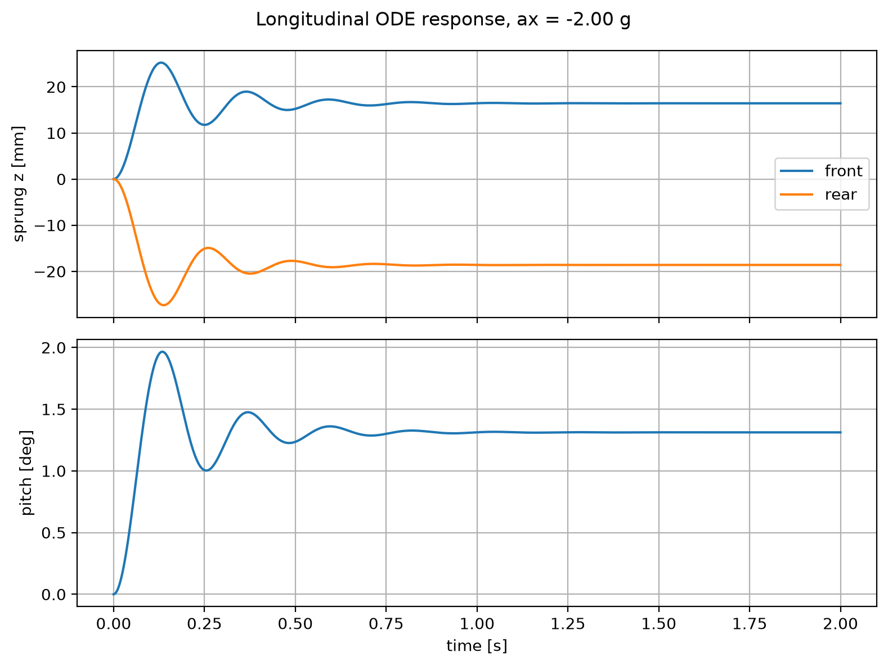
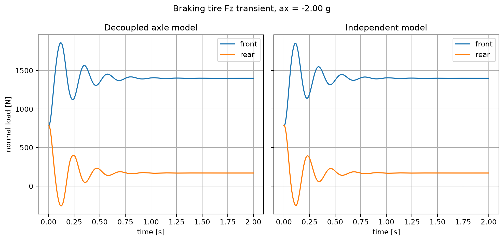
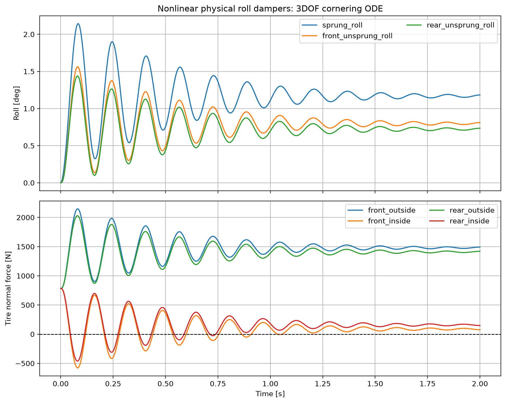
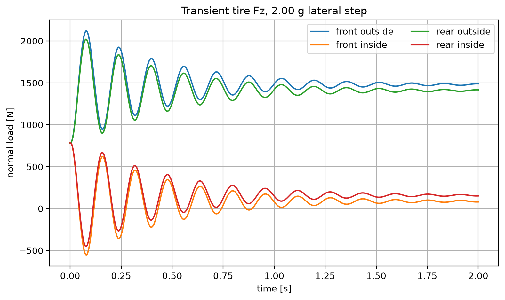

包含縱向加速、縱向煞車與側向過彎。準靜態計算檢查彈簧作動量與姿態角；ODE 模擬觀察暫態收斂、峰值與輪胎法向力變化。
| category | name | number |
|---|---|---|
| 導出量 | hl_load_cases_max_abs_pitch_deg | 1.3119050821296991 |
| 導出量 | hl_load_cases_max_abs_roll_deg | 1.1688292565551355 |

共 41 筆資料；完整數據請開啟 CSV。
| case | ax_g | ay_g | front_sprung_axis_load_n | rear_sprung_axis_load_n | front_heave_spring_stroke_mm | rear_heave_spring_stroke_mm | pitch_deg | roll_deg | front_roll_suspension_travel_mm | rear_roll_suspension_travel_mm | front_heave_spring_force_n | rear_heave_spring_force_n | front_roll_spring_force_n | rear_roll_spring_force_n |
|---|---|---|---|---|---|---|---|---|---|---|---|---|---|---|
| static | 0.0 | 0.0 | 1274.8645 | 1274.8645 | 9.049788739178739 | 11.312235923973422 | -0.0 | 0.0 | 0.0 | 0.0 | 1274.8645000000001 | 1274.8645 | 0.0 | 0.0 |
| acceleration_1p0g | 1.0 | 0.0 | 659.5452843137255 | 1890.1837156862744 | 4.681866572455969 | 16.772138632376883 | -0.6560385272963829 | 0.0 | 0.0 | 0.0 | 659.5452843137256 | 1890.1837156862744 | 0.0 | 0.0 |
| acceleration_1p2g | 1.2 | 0.0 | 536.4814411764705 | 2013.2475588235293 | 3.808282139111414 | 17.864119174057574 | -0.7872310961317648 | 0.0 | 0.0 | 0.0 | 536.4814411764705 | 2013.2475588235293 | 0.0 | 0.0 |
| braking_1p0g | -1.0 | 0.0 | 1890.1837156862744 | 659.5452843137255 | 13.417710905901508 | 5.852333215569961 | 0.6560385272963829 | 0.0 | 0.0 | 0.0 | 1890.1837156862746 | 659.5452843137256 | 0.0 | 0.0 |
| braking_2p0g | -2.0 | 0.0 | 2505.502931372549 | 44.22606862745101 | 17.785633072624275 | 0.3924305071664991 | 1.3119050821296991 | 0.0 | 0.0 | 0.0 | 2505.5029313725486 | 44.22606862745101 | 0.0 | 0.0 |
| cornering_1p0g | 0.0 | 1.0 | 1274.8645 | 1274.8645 | 9.049788739178739 | 11.312235923973422 | -0.0 | 0.5844146282775677 | 4.033784923853293 | 4.8263694902762815 | 1274.8645000000001 | 1274.8645 | 348.64657605898407 | 312.8632096179594 |
| cornering_2p0g | 0.0 | 2.0 | 1274.8645 | 1274.8645 | 9.049788739178739 | 11.312235923973422 | -0.0 | 1.1688292565551355 | 8.067569847706586 | 9.652738980552563 | 1274.8645000000001 | 1274.8645 | 697.2931521179681 | 625.7264192359188 |
| category | name | number |
|---|---|---|
| 導出量 | hl_ode_braking_peak_abs_pitch_deg | 1.965387107124753 |
| 導出量 | hl_ode_acceleration_peak_abs_pitch_deg | 1.1102237438194305 |
| 導出量 | hl_ode_lateral_min_tire_fz_n | -578.2800791754842 |








共 900 筆資料；完整數據請開啟 CSV。
共 900 筆資料；完整數據請開啟 CSV。
共 900 筆資料；完整數據請開啟 CSV。
共 900 筆資料；完整數據請開啟 CSV。
共 900 筆資料；完整數據請開啟 CSV。
| case | model | response | final | peak_abs | peak_time_s | settling_2_percent_s | overshoot_percent |
|---|---|---|---|---|---|---|---|
| braking | decoupled | pitch_deg | 1.3119050821296991 | 1.965387107124753 | 0.13348164627363737 | 0.6340378197997776 | 49.811684846453595 |
| braking | independent | pitch_deg | 1.3119050821296991 | 1.836427209590452 | 0.13125695216907676 | 0.6206896551724138 | 39.981713205140004 |
| acceleration | decoupled | pitch_deg | -0.7872310961317648 | 1.1102237438194305 | 0.13125695216907676 | 0.6206896551724138 | 41.02894934851557 |
| acceleration | independent | pitch_deg | -0.7872310961317648 | 1.0625933015526523 | 0.12680756395995552 | 0.6140155728587319 | 34.97857322632973 |
| cornering | physical nonlinear | roll_deg | 1.1688292565551355 | 2.1429503332294155 | 0.08231368186874305 | 1.7797552836484982 | 83.34160624497761 |
共 41 筆資料；完整數據請開啟 CSV。
模型使用雙向線性輪胎彈簧。若 Fz 小於零，表示已超出保持接地的假設；本模型未計算離地後接觸切換。settling_2_percent_s 空白表示在模擬時間內尚未收斂。